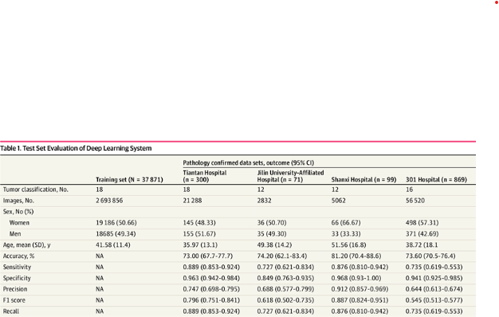
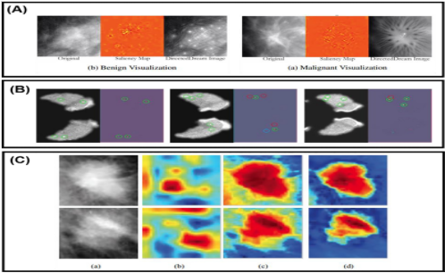

ENG0018 Computer Laboratory 2025-2026
Student URN: 6953461
Conference Project: What are the limitations of CNN approaches in MRI-based brain diagnosis?
Abstract
This paper argues that there are several limitations surrounding the use of deep learning models in healthcare systems. Convoluted neural networks are now the most commonly used tool in tumour
diagnosis, classification and medical imaging. The article is evaluated on systemic data and figures obtained by private healthcare centres and training data sets from hospitals.
Introduction
The aetiology of cancer has always been a topic open to scientific and even philosophical debate. Over the centuries, the medicinal world has seen exponential progress in technological advancements,
introducing devices such as X-rays and CT/PET scans which have completely reformed medical imaging and in particular tumour diagnosis. MRI is widely used to identify and classify tumours in the brain
and other organs. Deep Learning models have become integrated in most hospitals as studies have proved it helps doctors classify tumours faster and more accurately. However, problems such as insufficient data
due to patient privacy and inconsistent model performance across hospitals. This review aims to highlight and critically assess the key limitations in deep learning approaches in MRI-based tumour diagnosis.
Discussion
2.1 Scarcity of data
CNNs need training data to learn from examples and scenarios in order to improve their ability to make predictions on new and unseen data. Through analysing a large set of labeled images
(in which case is known as a trained dataset), the network recognises general patterns in new images it has never encountered before. An MRI review from the National Library of Medicine states that
‘the success of the ML and DL models is highly dependent on the training data’s quality, quantity and relevance’(Dorfner et al., 2025).

'Table 1, (Gao et al., 2022) [Test Set Evaluation of Deep Learning System], Jama Network Open'
This study shows several limitations. The table only has training data obtained from a single centre, meaning it lacks external validation from other hospitals. The number of rare tumours was
relatively lower in the training data set which might have caused some bias in the model’s performance. For example, in unseen data sets, most of its decisions will be based on the observations recorded
in the training data set. Using other MRI views and adding more patient information could help improve its accuracy. In the future, this system could also be developed to assist with treatment planning
and predicting patient outcomes.
2.2 Model Interpretability and clinical trust
There are two main ways in which neural networks make decisions in medical imaging. The first uses attribution-based methods which are flexible with any model. They help show which parts of an MRI/CT image have
influenced the model’s prediction and classification. For example, if a neural network predicts that a scan shows a tumour, specific regions of the image are highlighted which contributed to the decision.
An importance value is assigned to each region of pixels. Red or warm colours show pixels that strongly support the model’s decision whereas blue or cool colours show pixels that oppose or decrease confidence
in the prediction. This is shown in Figure 1;

'Figure 1, (Huff, Weisman and Jeraj, 2021) [Interpretation and Visualisation Techniques for Deep Learning Models in Medical Imaging], National Library of Medicine'
CNNs have proved to be very effective for a variety of medical diagnostic tasks, even sometimes outperforming healthcare professionals. However, the black-box nature has dulled their clinical use.
The black box nature of AI refers to systems that have hidden internal decision making processes which are difficult to understand. This raises concerns about trust, fairness and accountability.
A peer-reviewed Journal of Imaging stresses that a medical diagnosis system needs to be ‘transparent, understandable and explainable to gain the trust of physicians, regulators and most importantly patients’
(Singh, Sengupta and Lakshminarayanan, 2020)
2.3 Poor Generalisation
Several studies have shown that CNNs tend to perform well on one dataset from one hospital, but as soon as sites are exchanged they perform much worse when tested on new data from a different hospital. More caution should be overlooked on small, private datasets as
‘they fail to generalise beyond a single institution or MRI scanner’(Dorfner et al., 2025). This results in unintended bias or spontaneous correlation in the training data. The performance of the model ‘declines dramatically when directly applied to samples from
another unknown hospital’(Lu et al., 2022).
Poor generalisation typically arises because the model is trained on a limited domain without the full representation of the clinical variability, lacking rigorous external validation. An example of this is image variability where tumours differ in size, shape and location.
As well as narrow datasets, which means that training on a few images limits the knowledge of patterns the model recognises.
Moving forward, techniques should be adjusted to enhance domain adaptation. This helps models adjust more easily when new scanners or hospitals are different from the training data - more variety helps the model learn patterns that work everywhere.
2.4 Ethical and Practical Issues
CNNs for brain tumour diagnosis face ethical issues like bias and misdiagnosis in algorithms. If these algorithms are developed on datasets that are under- or over-representative population subgroups, they may present bias when deployed in clinical practice,
‘leading to unequal access to care and potential harm to patients’(Khosravi and Schweitzer, 2023). This can be demonstrated through a dataset containing mostly adults, from which the model may misdiagnose children leading to potential harm.
This leads to slow clinical approval and introduces more boundaries to deep learning methods. This unfairness undermines clinical trust. More examples of ethical and practical issues are listed below:
| Ethical Issues |
Practical Issues |
| AI mistakes - CNNs can confuse tumour types and execute the wrong diagnosis |
Costly - bulk computing resources are required and it is time consuming to train and run effectively |
| Privacy protocol - medical images are sensitive to only individual patient records |
Integration into hospital staff is difficult - gain trust of clinicians and workers, staff also needs to be trained |
| Liability and accountability - if a CNN fails to detect a tumour, it's hard to place responsibility on someone |
Model variability - hard to build a model which has good generalisation since every MRI scan has different protocols |
References
Alshomrani, F. (2025). Challenges and Advances in Classifying Brain Tumors: An Overview of Machine, Deep Learning, and Hybrid Approaches with Future Perspectives in Medical Imaging. Current Medical Imaging Formerly Current Medical Imaging Reviews, 21. doi:https://doi.org/10.2174/0115734056365191250602124819.
Bouhafra, S. and Bahi, H.E. (2024). Deep Learning Approaches for Brain Tumor Detection and Classification Using MRI Images (2020 to 2024): A Systematic Review. Deleted Journal. doi:https://doi.org/10.1007/s10278-024-01283-8.
Dorfner, F.J., Patel, J.B., Kalpathy-Cramer, J., Gerstner, E.R. and Bridge, C.P. (2025). A review of deep learning for brain tumor analysis in MRI. npj Precision Oncology, [online] 9(1). doi:https://doi.org/10.1038/s41698-024-00789-2.
Gao, P., Shan, W., Guo, Y., Wang, Y., Sun, R., Cai, J., Li, H., Chan, W.S., Liu, P., Yi, L., Zhang, S., Li, W., Jiang, T., He, K. and Wu, Z. (2022). Development and Validation of a Deep Learning Model for Brain Tumor Diagnosis and Classification Using Magnetic Resonance Imaging. JAMA Network Open, [online] 5(8), pp.e2225608–e2225608. doi:https://doi.org/10.1001/jamanetworkopen.2022.25608.
Huff, D.T., Weisman, A.J. and Jeraj, R. (2021). Interpretation and visualization techniques for deep learning models in medical imaging. Physics in Medicine & Biology, [online] 66(4), p.04TR01. doi:https://doi.org/10.1088/1361-6560/abcd17.
Khosravi, P. and Schweitzer, M.E. (2023). Artificial intelligence in neuroradiology: a scoping review of some ethical challenges. Frontiers in radiology, 3. doi:https://doi.org/10.3389/fradi.2023.1149461.
Lu, B., Li, H., Chang, Z.-K., Li, L., Chen, N.-X., Zhu, Z., Zhou, H., Li, X., Wang, Y., Cui, S., Deng, Z., Fan, Z., Yang, H., Chen, X., Thompson, P.M., F. Xavier Castellanos and Chen, Y. (2022). A practical Alzheimer’s disease classifier via brain imaging-based deep learning on 85,721 samples. Journal of Big Data, 9(1). doi:https://doi.org/10.1186/s40537-022-00650-y.
Rasool, M., Abdulfatah Noorwali, Hamza Ghandorh, Nor Azman Ismail and Wael M. S. Yafooz (2024). Brain Tumor Classification using Deep Learning: A State-of-the-Art Review. Engineering, Technology & Applied Science Research, [online] 14(5), pp.16586–16594. doi:https://doi.org/10.48084/etasr.8298.
Singh, A., Sengupta, S. and Lakshminarayanan, V. (2020). Explainable Deep Learning Models in Medical Image Analysis. Journal of Imaging, 6(6), p.52. doi:https://doi.org/10.3390/jimaging6060052.